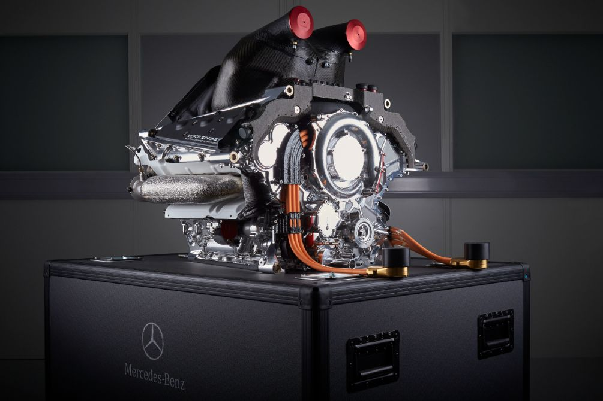

El Mercedes-AMG One es la definición máxima de lo que sucede cuando se decide meter el motor de un Fórmula 1 en un auto de calle, logrando una bestia híbrida de más de 1.000 caballos de fuerza que suena y acelera como el monoplaza que usaron el piloto multicampeón Lewis Hamilton y su compañero Nico Rosberg en la temporada 2015. Su complejo sistema de propulsión V6 de 1.6 litros, derivado directamente del equipo de competición, le permite alcanzar los 352 km/h, aunque su verdadera magia reside en su aerodinámica activa y en el hecho de ser una joya de la ingeniería tan extrema que incluso a la marca le costó años perfeccionarla para que fuera legal circular con ella. Es, básicamente, lo más cerca que un mortal (con mucha plata) puede estar de sentir la fuerza de un GP mientras va al supermercado.

El motor del Mercedes-AMG ONE es una unidad de potencia de Fórmula 1 real, adaptada para la calle, que combina un bloque V6 de 1.6 litros turboalimentado con cuatro motores eléctricos para entregar un total de 1,063 CV. Lo más sorprendente es su capacidad de girar hasta las 11,000 rpm, algo posible gracias a un sistema de válvulas neumáticas en lugar de resortes convencionales. Esta compleja configuración híbrida incluye un motor eléctrico integrado en el turbo para eliminar el retraso de respuesta, otro unido al cigüeñal para asistir al motor térmico y dos más en el eje delantero que otorgan tracción total y permiten el uso del coche en modo puramente eléctrico. Lograr que este motor fuera utilizable en el día a día supuso un reto de ingeniería masivo, ya que hubo que reducir el ralentí de competición y cumplir con normativas de emisiones extremadamente estrictas, manteniendo la exigencia de una reconstrucción completa de la unidad cada 50,000 kilómetros.
A la receta Al horario